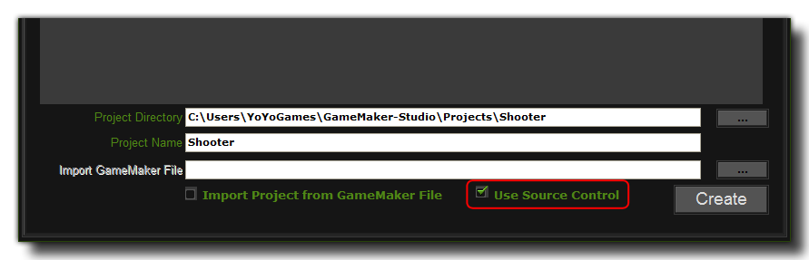
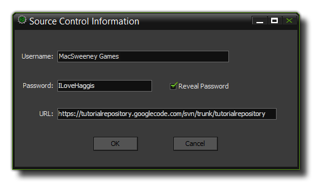

Setting Up GameMaker:Studio For Source Control
Once you have your repository created and your SVN Client installed, you need to tell GameMaker:Studio to activate Source Control for your projects.
When you have prepared your computer with the necessary SVN Client applications, you have to tell GameMaker:Studio to add your projects into the Source Control repository. This can be done for new
projects as well as projects that have been started previously but never versioned. The steps to follow in either case are outlined below.
Preferences
By default the GameMaker:Studio Preferences will be set to use the version of SVN that is bundled along with the program, but should you wish to use a different
version or another type of base source control, you will need to open the Source Control Preferences Tab to point to the installed version that you wish to use.
If everything is as it should be, there should be a message beneath the given path saying "SVN Status: Installed".
Adding Source Control To A New Project
When you create a new project, you can tell GameMaker:Studio to add it directly into Source Control so that all further work done on this project can be versioned. To do this, you must first create the project
and make sure that you have selected "Use source control" from the new project form, like this:

You would then click on the "Create" button as normal, but before you can actually start working on your new project you are presented with another form where you can enter your username and password (whoever
administers the system will have given you this, otherwise just leave it blank), as well as point GameMaker:Studio to the location where you created your repository:

Once you have done that, just click "OK", and now you are ready to work on your project with source control keeping track of all the changes that you make.
Adding Source Control To An Existing Project
If you have been working on a project without having it configured for source control, it's still not too late and you can actually version it too and have it protected the same as any new file. To do this, you
have to go to the Global Game Settings and select the Source Control tab, then fill in the relevant details. It should look something like this :
 The Username and Password fields should be filled in with the name and password proportioned to you by whoever administers the system (if you have none, or don't know them, then just leave it
blank) and the URL should point GameMaker:Studio to the location where you created your repository. Finally, click on the "import Project to repository" button to version your current project and add it to the
source control repository. Note, that this only needs to be done once for any project and you should never need to do this again.
The Username and Password fields should be filled in with the name and password proportioned to you by whoever administers the system (if you have none, or don't know them, then just leave it
blank) and the URL should point GameMaker:Studio to the location where you created your repository. Finally, click on the "import Project to repository" button to version your current project and add it to the
source control repository. Note, that this only needs to be done once for any project and you should never need to do this again.
Summary
Whether you choose to start a new project or add a previously started one into your source control repository, it is essential that you understand what is happening and how this system should work from now on.
Basically, you now have two copies of your project - a local one stored on your own computer and a versioned one stored in the repository. All changes you make to your project from this point onwards will be made
to your local copy, not the copy stored in your repository.
When you have worked on your project and are happy with the changes you have made, this project is then committed to the repository along with a short comment about what you have done, and it is given
a version number. What this means is that you can go ahead and make changes to your project safe in the knowledge that at any time you can "turn the clock back" and recover a previous version from your repository...
you can even go back several versions if it is necessary! This also means that several people can work on the same project knowing that should someone make an error, it can be easily fixed and doesn't need to
negatively affect the other people in the team.
For a more detailed explanation of how to add and commit files to your repository, please continue to the next section "Using Source Control".